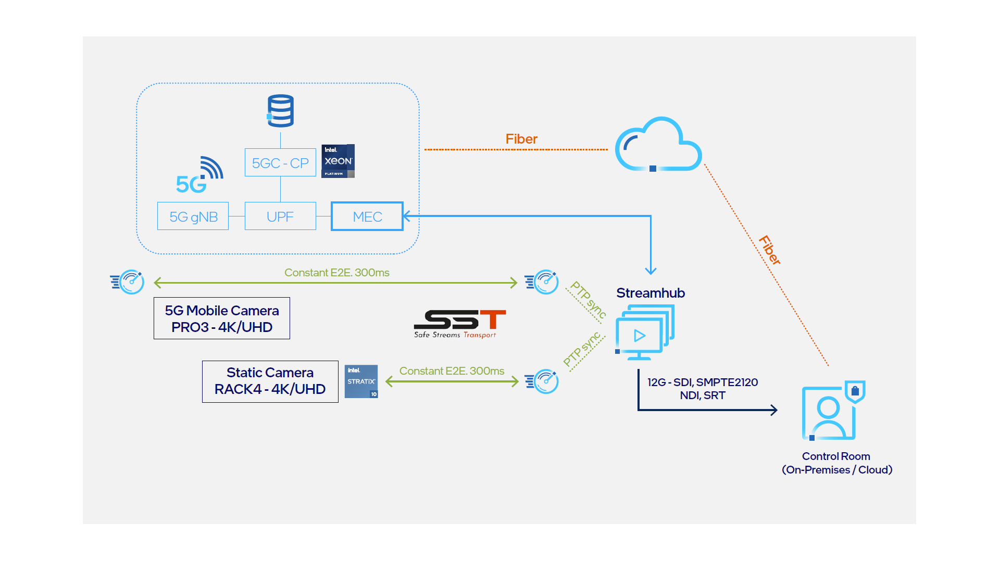

Proof of concept shows 5G has low latency, bandwidth, and stability to support high-quality, live media broadcasts.
At a glance:
Telefónica is one the largest telecommunications service providers in the world.
A proof of concept from Aviwest, Intel, and Telefónica shows that 5G has the potential to transform the industry by enabling flexible and cost-effective multi-camera, remote, live video production.
Outside broadcast trucks and current mobile broadcasting technologies do not provide a panacea. But that may be about to change. A proof of concept (PoC) from Aviwest, Intel, and Telefónica shows that 5G has the potential to transform the industry by enabling flexible and cost-effective multi-camera, remote, live video production.
Free of extensive cabling, equipment, and crews, broadcasters can respond more quickly to events as they unfold, and take productions into places not previously possible with OB trucks.
“Thanks to Intel’s advanced 5G leadership, remote production using mobile transmitters equipped with 5G connectivity and cloud-based production solutions will drastically reduce the complexity and cost of live production.” —David Jaouen, Sales Director Europe & LATAM at Aviwest
Today’s consumers are used to having a constant stream of information at their fingertips. For media outlets, particularly news and sports broadcasters, speed and efficiency of information delivery is more than just a priority—it’s the foundation of their operations. In times of enormous media competition, broadcasters can’t afford to be left behind, to be late, or to miss something that might be important. Oftentimes, beating the competitors means taking the broadcast out of the studio into the action. Yet, news and sports producers can face multiple problems when it comes to covering live, remote events with existing broadcast technologies.
Outside broadcast (OB) trucks require large crews and extensive equipment, making them expensive to operate and maintain. Each truck requires a generator that produces around 20,000W of energy to run media equipment. They’re also large in size, between five and 18 meters in length. Event coverage must be planned and prepared well in advance.
For some sports events, like marathons, cabling can run up to miles. Often, it’s necessary to deploy cables in places where people can potentially pass or in places that are exposed to wind, rain, and snow. In many situations, the wiring is so complex it requires a specialist team to install and manage it. Also, the unpredictable nature of live news or sports broadcasts can require the recording and transmission of scenes that are far from the reach of deployed wiring.
Mobile broadcasting of live events via 4G technology offers greater creative freedom. However, broadcasters are still forced to make uncomfortable compromises and difficult choices. Technologies that deliver the right bandwidth can limit flexibility, compromise mobility, and be expensive. Yet, fully mobile, easy-to-use, and cost-effective mobile technologies can’t always provide the speed, bandwidth, and low latency that is so critical to live video. However, a solution is now at hand.
5G technology can help broadcasters deliver information virtually live, while capturing viewers’ attention with top-quality visuals and compelling production values. Built with 5G in mind, a network can theoretically offer data transfer speeds of up to 20 Gb/s download and 10 Gb/s upload, far exceeding what is offered by current cellular networks and other access technologies, including fiber optics1. Transmission delays of no more than 4 ms2 could allow production teams to broadcast live from dozens of cameras, all streaming compressed 4K video in real time to a producer in another city. The producer could then select the best shots using production software running on an edge cloud, before transmitting footage to viewers around the world. Connection stability is also important for some mobile events—it shouldn’t break down and should provide high-bandwidth data transmission even at 500 km/h. 5G networks have these rates covered.
“The incursion of video transmission via mobile technology to the detriment of satellite, especially in news, has been one of the great changes in the television industry. One of the current challenges is to ensure that these transmissions are reliable enough to guarantee service. And the key to that is bandwidth and latency.”—Daniel Barroso, Telefonica Broadcasting Service
However, the final element that makes 5G a game changer is its ability to support “quality of service”—in other words, the capacity needed for the service to work properly. Sometimes huge bandwidths aren’t required, but it’s important the network has reserve capacity for when it’s needed. Technologies within 5G, like network slicing, help to ensure that capacity is available.
To test the capabilities of 5G technology to support live remote broadcasting, Aviwest, Intel, and Telefónica recently collaborated on a year-long proof of concept (PoC) in Madrid, Spain. The aim of the trial, which was instigated by the Spanish Ministry of Economic Affairs and Digital Transformation, was to design and evaluate an early-stage PoC for 5G remote production capabilities, in particular multi-camera synchronization using 5G private networks.
Figure 1. An early-stage proof of concept (PoC) for 5G remote production capabilities.
The PoC sought to analyze different video coding solutions in multi-camera scenarios. It sought to learn whether 5G could enable broadcasters to remotely control cameras and carry out live, remote video production in the cloud—see figure 1. Each video camera was encoded to optimize occupied bandwidth and maintain transmission speed and video quality standards. Footage was sent through the 5G access station to the 5G core, which then forwarded session data on to the edge cloud, running Streamhub production software. Here, the producers were able to preview the low-resolution footage sent from the remote cameras in real time. Once the producer had selected the footage they wanted, a control signal was sent back to the edge. From here, the final program signal was sent, encoded, to the broadcast station for live transmission.
The PoC comprised the following technologies from Aviwest, Intel, and Telefónica:
The PoC showed that 5G networks can provide uplink bandwidth of hundreds of Mbps, allowing high-quality video signals to be sent directly to a central studio with very low latency at excellent quality. Low-latency production software hosted at the edge enabled the realization and editing of video streams from multiple cameras simultaneously, enabling remote TV producers to work with footage in real time to create content for live broadcasts.
“For high-quality live video broadcasting over 5G, all that is needed is a compact Intel® technology-based transmitter and production software running on Intel Xeon processors. Expensive trucks full of dedicated equipment are no longer essential,” said Mario Buritica, Business Development Manager for EMEA at Intel. “Intel’s 5G and edge computing technologies can reduce costs and increase flexibility, making the live broadcast of numerous new events economically feasible.”
Since far less physical equipment and cabling are needed, production teams will be able to respond flexibly to situations. A reporter sent to the scene of an event will be able to start a live broadcast upon arrival, straight from their terminal, be it a smartphone, a computer, or a 5G-equipped camera. For pre-planned and prepared coverage, such as yacht races, Grands Prix or corporate events, a 5G-based solution requires less equipment, simplifying production. Less cabling improves health and safety, since there are fewer trip hazards; can reduce costs; and makes possible more imaginative camera placements. This greater simplicity also allows broadcasters to move quickly and can make it easier to take productions into places that may have caused greater difficulty previously.
Just the possibility of counting on a high quality 5G connectivity with guaranteed resources makes all the difference in live broadcasting. To be able to react on the spot and right away to any news or events offers an unprecedented level of flexibility in media coverage.” —Juan Cambiero Cuns, Head of 5G Customer Innovation at Telefónica
Broadcasting over 5G networks also enables simultaneous deployment to several remote locations for joint relay. Events such as marathons, processions, parades, and demonstrations can be covered more easily and cost effectively. Producers can have at their disposal transmissions from dozens of differently located cameras, rather than one or two video streams. Similarly, 5G makes parallel productions of the same event a reality, potentially boosting broadcaster revenue and profit. For example, one production team could cover a football match for two or more different broadcast clients with personalized support cameras, graphics, and even in different languages.
Finally, 5G-based solutions make possible live coverage from smaller, local events, whose budgets currently don’t stretch to traditional broadcast production methods, extending the business of live media coverage to new markets and audiences.
Aviwest is a leading provider of live and recorded video contribution systems over bonded unmanaged IP networks, such as cellular, Wi-Fi, satellite, or public internet. Powered by SST, a proprietary and patented intelligent IP bonding technology which has won two Technology and Engineering Emmy Awards, its products offer superior live video quality, latency, power consumption, weight, and size compromises for any portable and on-the-move, in-vehicle or fixed location contribution application. Headquartered in Saint-Grégoire, France, Aviwest supports broadcasters, video professionals, and first responders across 100+ countries worldwide.
Telefónica is one the largest telecommunications service providers in the world. The company offers fixed and mobile connectivity as well as a wide range of digital services for residential and business customers. With more than 365 million customers, Telefónica operates in Europe and Latin America. Telefónica is a 100% listed company and its shares are traded on the Spanish Stock Market and on those in New York and Lima.
You may find the following resource helpful: Intel’s Visual Cloud

Drive actionable insight, count on hardware-based security, and deploy dynamic service delivery with Intel® Xeon® Scalable processors.
Learn moreIntel® FPGAs offer a wide variety of configurable embedded SRAM, high-speed transceivers, high-speed I/Os, logic blocks, and routing.
Learn moreExplore the latest customer stories, case studies, and news releases highlighting data-centric innovations.
Learn how Intel® technologies can help provide the scalability needed for high-demand workloads and applications.
Get the latest information about Intel data center performance, flexibility, and scalability.
Product and Performance Information
1For a network to be considered 5G, it has to abide by certain rules set by governing authorities like 3GPP. One of those specifications is speed for uploads and downloads. There’s a minimum peak download rate and a minimum peak upload rate for a network to be called a 5G network, meaning that each 5G base station has to support speeds at least this fast: 5G peak download speed: 20 Gb/s (gigabits per second), or 20,480 Mb/s (megabits per second), 5G peak upload speed: 10 Gb/s (gigabits per second), or 10,240 Mb/s (megabits per second). https://www. lifewire.com/5g-speed-4180992
25G also has a minimum latency requirement. Latency refers to the time lapse between when the cell tower sends data and when the destination device (like your phone) receives the data. 5G requires a minimum latency of just 4 ms assuming that ideal conditions are met, but could drop as low as 1 ms for some forms of communication, particularly ultra-reliable and low-latency communications (URLLC). https://www.lifewire.com/5g-speed-4180992